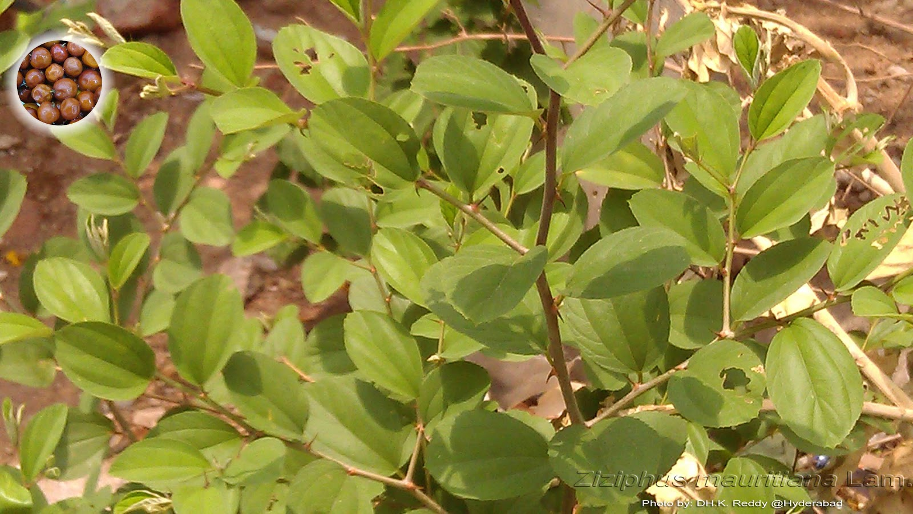

Basonym of Drug
Badara
Main Synonym
- Ajapriya
- Kuha
- Koli
- Vishama
- Ubhay Kantaka
- Kola
- Karkandhu
Regional Name
- Bengali: Kula ber
- Gujarati: Bor
- Hindi: Bera
- Tamil: Elande
- Telugu: Regu
Botanical Name
Zizipus jujuba
Family
Rhamnaceae
Classification (Gana)
Aacharya Sushruta mentioned Badara in Nyagrodhadi Gana. Acharya Charak mentioned it in Chardi Nigrahana, Swedopaga, Virechanopaga, and Hridya Mahakashay.
External Morphology
10-15 feet short thorny tree
Useful Parts
Important Phytoconstituent
Leucocyanidine, Mauritines, Zizogegin, Zeatin
Rasa Panchak
- Apakva Phala:
- Rasa: Madhura, Amla
- Guna: Guru, Snigdha
- Virya: Shita
- Vipaka: Madhura
Action
Vatapittahara
Therapeutic Indication
- Brumhana (increases weight)
- Deepen (increases appetite)
- Bhedana (purgative)
- Dahahara (used in burning sensations)
- Raktapitta Hara (used in bleeding disorders)
Therapeutic Uses
- Atisara - Bark decoction is beneficial in diarrhea.
- Ahiputana - Bark powder is applied to diaper rash in children.
- Plihodara - Leaf paste of Badar is applied externally for splenomegaly.
Dose
Formulations
Adverse Effect
Not Known